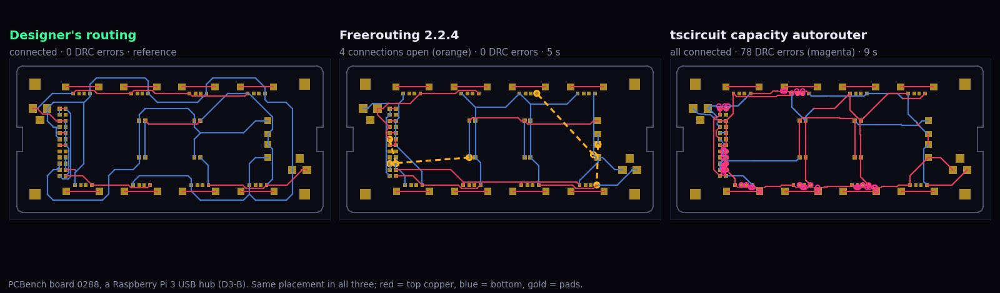

In the last post we scored four routers on one board and said one board is not a benchmark. Here is a benchmark. PCBWorld, from LG AI Research, takes real open-source boards, keeps every part where its designer put it, strips the routing, and asks a router to put it back. Our routing harness is built for exactly that job, so we ran it on the 119 test boards.
- On the 99 small boards, the best of our routers finished 78% fully connected and with zero DRC errors.
- On the 10 medium boards it finished 70%, and on the 10 large ones 20%.
- That is close to the paper's strongest classical router, and ahead of its GPT-5.4 agents on both splits the paper reports.
The more useful finding is about the boards we did not finish. Every one of them was 1 to 5 items from done. Running the benchmark also found three bugs in our harness, and showed that the rule we shipped this morning for "hand-finish or re-place?" was wrong.
![Two bar charts of clean-pass rate. D3-A, 99 small boards: designer's routing 1.00, circuit-skills best of backends 0.78, Freerouting 2.2.4 0.75, tscircuit capacity autorouter 0.22, the paper's Freerouting 2.1.0 0.80, KiCadRoutingTools 0.74, PPO policy 0.86, GPT-5.4 agent 0.65, GPT-5.4-mini agent 0.28. D3-B, 10 medium boards: designer 1.00, circuit-skills 0.70, Freerouting 2.2.4 0.70, capacity autorouter 0.00, paper Freerouting 2.1.0 0.78, KiCadRoutingTools 0.20, PPO 0.45, GPT-5.4 agent 0.00, GPT-5.4-mini 0.00.](scores.jpg)
01 / The benchmark
PCBWorld (arXiv:2607.05915, KDD 2026 workshop) wraps KiCad's interactive router as an environment for reinforcement-learning and LLM agents. Its real-board set, D3, is 678 boards from the PCBench collection of open-source KiCad projects: breakouts, badges, chargers, USB hubs, motor controllers. They are split into three tiers by size:
- D3-A: small boards, up to 13 nets. 99 test boards.
- D3-B: medium boards, up to 42 nets. 10 test boards.
- D3-C: large boards, up to 451 nets and 2,103 pads. 10 test boards.
The headline metric is clean pass: the board comes back fully connected and with zero error-level KiCad DRC violations under its own design rules. The paper calls that the closest proxy for "ready to fabricate", and it is the right bar. Partial credit hides dead boards.
The authors publish everything needed to rebuild the board set from PCBench, without redistributing anyone's boards. Their preparation chain ran unchanged on a stock KiCad 9.0.8 and produced the same 679 boards as the paper. Credit to them for a benchmark that is this easy to reproduce.
02 / How we ran it
Every board goes through route_eval, the harness from the last post. Three backends run on each one:
- Freerouting 2.2.4, through KiCad's own Specctra export and import, so it works on any KiCad board.
- tscircuit's capacity autorouter, on the outer layers and on all layers. This is the router inside tscircuit, which we run directly on the KiCad board.
Each result is scored with KiCad DRC under the board's own project rules, the way the paper scores its baselines. The best candidate per board is kept: clean first, then the most connected, then the fewest violations. That is our counterpart to the paper keeping the best of five attempts. The designer's own routing is scored the same way, as a check on the scorer.
A few differences from the paper's protocol matter when comparing numbers:
- We ran each backend once; the paper keeps the best of five and averages Freerouting over four seeds.
- We used Freerouting 2.2.4; the paper used 2.1.0.
- Our DRC is stock KiCad's; theirs is their engine's build of the same version, with the same rules.
03 / Results
| Split | circuit-skills, best of | Freerouting 2.2.4 | Capacity autorouter | Paper: Freerouting 2.1.0 | Paper: PPO | Paper: GPT-5.4 agent |
|---|---|---|---|---|---|---|
| D3-A, 99 small | 0.78 | 0.75 | 0.22 | 0.80 | 0.86 | 0.65 |
| D3-B, 10 medium | 0.70 | 0.70 | 0.00 | 0.78 | 0.45 | 0.00 |
| D3-C, 10 large | 0.20 | 0.20 | 0.00 | – | – | – |
Clean-pass rate per split. The paper does not report D3-C in its main table. One D3-C board is incomplete even as its designer left it, with 88 connections open in the original routing, so the designer's row there is 0.90, not 1.00.
A trained policy still wins on small boards; a classical router wins on medium ones. The paper's PPO policy gets 0.86 on D3-A, and up to 0.94 in one variant. It drops to 0.45 on D3-B, where Freerouting holds at about three in four. The GPT-5.4 agents, which route by calling KiCad step by step, take about four minutes per small board. They reach 0.65 on D3-A and 0.00 on D3-B. Our whole pass takes about 7 seconds per small board.
Large boards are where it falls apart: 2 of 10 clean. The test boards in this tier have 27 to 79 signal nets and up to 210 connections each; one-shot routing is not there yet.
04 / How the routers fail

The two routers fail in opposite ways, and the pattern held across all 119 boards:
- Freerouting is fab-clean but stops short. It gives up within seconds (3 to 22 here) with a few nets unrouted and zero DRC errors. It produced 67 of the 77 clean small boards and every clean medium and large one.
- The capacity autorouter connects everything but crowds. It reaches 98–100% connectivity on the outer layers, but leaves clearance violations and the occasional short where it squeezes between pads. It produced 10 clean small boards that Freerouting did not finish, which is why we keep both.
So the useful question is how close the nearest candidate is, not which router won. On every board we did not finish, the closest candidate was 1 to 5 items from done. Usually that candidate was Freerouting's, with a few open nets and nothing else. That is a short hand-finishing job, not a redesign.
05 / The benchmark tested us first
The first full run scored 0.75 on D3-A. Reading why boards failed turned up three bugs in our harness, not the routers:
- Freerouting 2.2.4 splits its file arguments on spaces. Five boards live in folders like
Cherry Mx Bitboard, and Freerouting tried to openCherry. The same bug would hit any of our own projects with a space in the path. It now routes in a scratch folder with no spaces in the path. - Our capacity-autorouter bridge let traces narrow below the board's own minimum width. It allowed 0.15 mm on boards that require 0.254 mm, and it ignored per-net width classes such as wider power nets. That accounted for most of its failures. Now it never goes below the board's minimum, and each net gets its class width: 0.14 → 0.22 clean on D3-A, with DRC errors per board down from 58 to 10.
- Round boards. A board outline drawn as a single circle was read as two corners of a rectangle, so one board's routing area collapsed to a sliver.
The second run is the one in the table. The first is kept in the repository as the record of what it caught.
06 / Hand-finish or re-place: we were wrong
Earlier today we shipped a placement score. It estimates how congested a placement is before any router runs. Alongside it went a rule that reads a routing run and recommends one of three things: order the board, hand-finish it, or re-place parts. D3 is the first real test of that rule, because every board in it has a known answer: its designer routed it cleanly with this exact placement. Whatever the routers did, "re-place" is never the right call here.
The rule said "re-place" on 23 of these boards. It was judging the top-ranked candidate, usually the capacity autorouter's fully connected board with dozens of clearance hits in the crowded areas. It ignored Freerouting's candidate, which was 2 open nets from done. It also let a crowded region overrule a short finishing job.
The fixed rule judges the candidate closest to done. Within ten items it says "hand-finish", and names any crowded parts as a warning rather than a veto. On all 119 boards it now never says "re-place". All 33 unfinished boards read "hand-finish". 85 of the 86 clean boards read "order-ready"; the last one has a fab-rule item that our checks flag and PCBWorld's scoring does not. On our own einhander keypad it now says to hand-finish Freerouting's two open nets and watch the USB connector and the RP2040. That is how the board was actually shipped.
The placement score itself predicts less than we hoped. On designer-placed boards it barely separates the boards a router finishes from the ones it doesn't. The best single signal is how many ratsnest lines cross, and it gets that ordering right about two times in three. It is good at finding where on a board the trouble is. It is not good at deciding whether a professional's placement is routable, because nearly all of them are. Where it should matter is on placements generated by code, like ours. The next experiment is to score our generated placements against these 678 designer placements and see where ours fall.
07 / So, can you one-shot a board?
For a small or medium board with a sensible placement: about three times in four, a router finishes it clean in seconds. When it doesn't, the best candidate is usually a few nets from done, a few minutes of hand-finishing. For large boards, not yet. And the fastest way to move these numbers turned out to be testing our own harness against someone else's benchmark.
Everything is in the pcb-layout skill at punkfab/circuit-skills. That includes the benchmark runner (evals/pcbworld/run_d3.py), the per-board results for every run, and the instructions for building the board set with a stock KiCad. Thanks to the PCBWorld authors for a benchmark that ran on our machine the first time. Have a board that needs routing, or one stuck a few nets from done? Start a project →